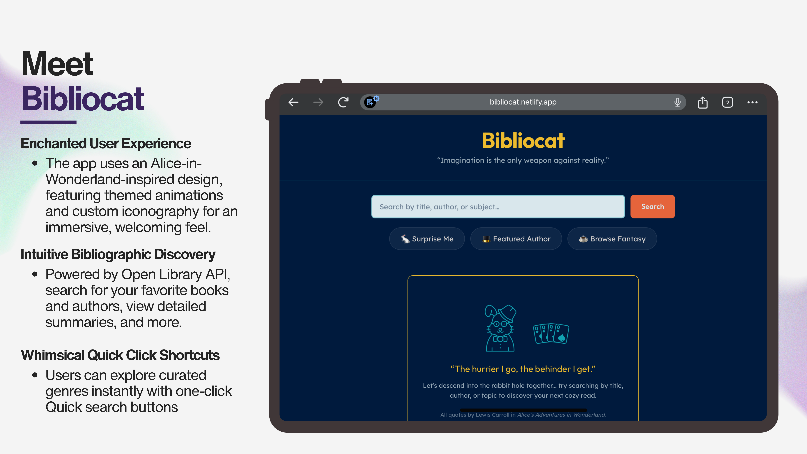
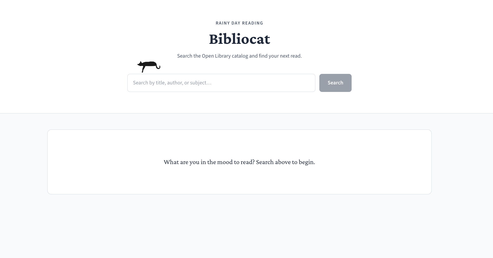
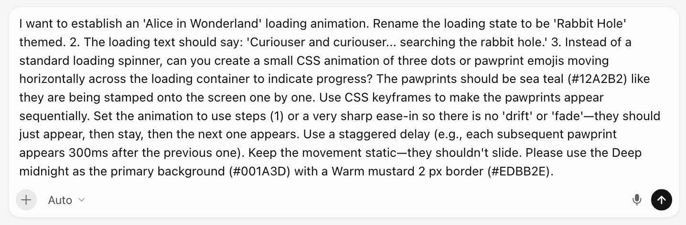
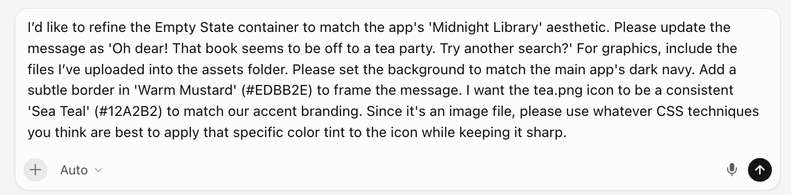
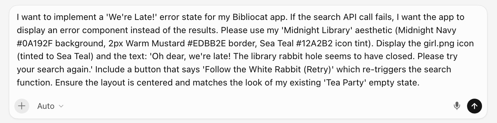
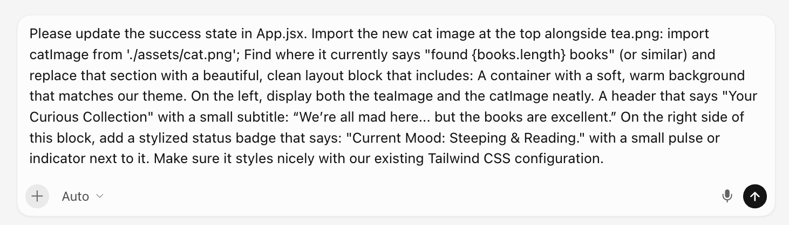
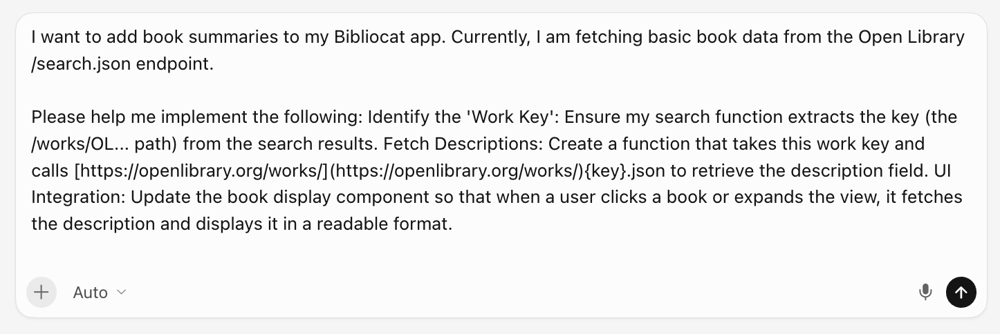
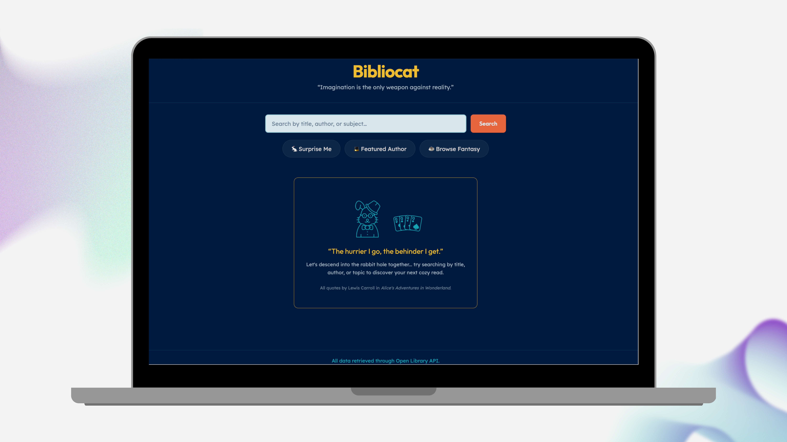

Bibliocat
Book search and discovery for titles, authors, and covers.
Fall down the rabbit hole of literature with Bibliocat, a book discovery tool powered by Open Library API. Search by title, author, or subject to find your next great adventure.

Challenge
The challenge when building Bibliocat was to design and build a book discovery tool that balances a cozy aesthetic with high-performance functionality, ensuring a seamless user experience across all interaction states, from the initial loading state to handling complex data errors.
Process
Because I am a professional librarian, I jumped at the opportunity to build a book-searching application. In the library world, “biblio cat” stands for “bibliographic catalog.” I thought it would be the perfect name for my application because I wanted to create a rainy-day, cozy, cat-themed book-finding app. Initially, I walked through another set of prompts to lay the groundwork for the app, but I strongly disliked the color theme and style, so I decided to start over with a more clearly defined prompt.
Before diving in further, I reviewed the Open Library API page to comply with usage guidelines and rate limits. I also wanted to understand the setup process for searching for authors, book titles, and book covers.
Visual design
My initial design idea was to create a rainy-day, sleeping-cat-in-a-bookstore theme. I envisioned a design featuring a cat silhouette, with its paw hanging off the top edge of the search bar, giving the impression that the cat is laying on top of it. I could never get the sizing or placement quite right, so I decided to abandon the idea. This is how the original design appeared.
Figure 1. Early design iteration

During my second project attempt, I asked Gemini to provide the hex codes for the book The Midnight Library by Matt Haig, as displayed below.
Figure 2. Midnight Library color inspiration

I envisioned a navy background with gold, orange, and teal accents. This was my first prompt for my second project attempt in Cursor.
Swipe or drag to browse
Figure 3. Second attempt prompts and initial home page
I was much happier with the overall look of the web application. To ensure functionality, I tested various searches and noticed that users had to wait a few seconds for results to load. I decided to add a “loading” message and thought a cat silhouette prancing across the page would be fun, as if it were “searching the stacks.” While researching literary cat names, I discovered the Cheshire Cat from Alice’s Adventures in Wonderland, which felt like a perfect whimsical touch for my book-search app.
Loading state: I implemented responsive indicators to maintain user engagement during asynchronous API calls, ensuring the interface remains interactive while data loads. I developed the following prompt and sent it to Cursor.
Figure 4. Loading state prompt

These are design iterations of the loading status.
Swipe or drag to browse
Figure 5. Loading state design iterations
It was important for me to have paw print stamps throughout the theme to emulate footprints. This video showcases the loading state in action, featuring the custom paw-print animation.
Figure 6. Loading state in action
Empty state: I also designed an intuitive “no result” message to guide users when searches retrieved no matching titles to help prevent confusion and encourage further exploration.
Figure 7. Empty state prompt

Design iterations for the empty state.
Swipe or drag to browse
Figure 8. Empty state design iterations
Error state: I implemented error handling to provide helpful feedback when network interruptions or API downtime occur, enabling users to retry their requests easily.
Figure 9. Error state prompt

Design iterations for the error state.
Swipe or drag to browse
Figure 10. Error state design iterations
Success state: I optimized the delivery and presentation of the search results, ensuring a seamless transition from the user’s query to displaying the actual results.
Figure 11. Success state prompt

Later iterations included adding a “Return to Home” button, creating credits for icons used from Flaticon, reducing the size of the book cover images to make the search results appear sharper, and adding the book publication year and edition number.
Swipe or drag to browse
Figure 12. Later iteration prompts
I also continued styling the home page across several prompt and design passes.
Swipe or drag to browse
Figure 13. Home page styling iterations
AI-assisted development
UI & experience enhancements focused on quick search shortcuts for spontaneous and thematic discovery.
- Surprise Me (randomized): I added the ability for users to generate a random search from a curated array of classics to enable spontaneous discovery.
- Featured Author (static): This tool immediately filters or searches for works by Lewis Carroll, offering a one-click path to the primary author theme in the app.
- Browse Fantasy (static): Users can quickly execute a search for the fantasy genre, providing a quick shortcut for individuals interested in this category.
Swipe or drag to browse
Figure 14. Quick search shortcut prompts
Technical & functional updates: I enhanced the search function to include each book’s work key, enabling direct retrieval of detailed summaries from the Open Library API. I also refactored the book component to fetch and display summaries automatically.
Figure 15. Summary retrieval prompt

Solution
Key features
Bibliocat was created to streamline the book-finding process while fostering a whimsical, thematic user experience through the following core features.
- Intuitive discovery — Designed as a bibliographic catalog, the app uses the Open Library API to provide a cozy book-finding experience that prioritizes discoverability and seamless access.
Figure 16. Bibliocat search experience

- Quick search shortcuts — Unlock a seamless reading experience by simply clicking on the “Surprise Me,” “Featured Author,” or “Fantasy” genre filters, allowing you to effortlessly discover your next favorite book.
- Responsive UI feedback — Bibliocat captivates users with enchanting Alice-in-Wonderland-themed animations during loading states, ensuring the interface remains engaging and interactive while API calls are underway.
Figure 17. Themed loading feedback

- Integrated summary retrieval — By capturing the unique work key for each search result, the application dynamically retrieves and displays detailed book descriptions to significantly enhance the user’s experience.
Figure 18. Polished home page

Deployment
The deployment provides users with an immersive, responsive, Alice-in-Wonderland-themed search tool that integrates data from the Open Library API. The Bibliocat application is live on Netlify.
Reflection
I most enjoyed moving beyond basic API integration to add themed loading states and consistent branding, which can create a more welcoming environment online. Technical hurdles, including creating a looping CSS animation for the pawprints during the loading state, enhanced my ability to use AI as a collaborator to resolve challenges. While I’m happy with the current version, future iterations could include more filtering options, such as limiting results by subject and genre. Furthermore, to enhance the enchanted Alice in Wonderland theme, I’d like to explore adding more animated imagery. For example, replacing the static teapot and teacup in the error state with a dynamic animation of tea being poured into a cup.